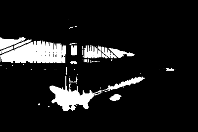
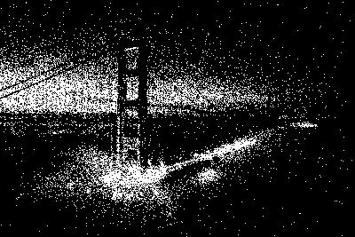
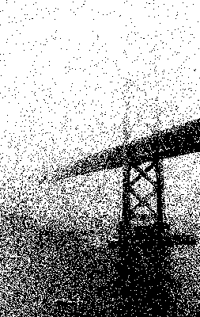
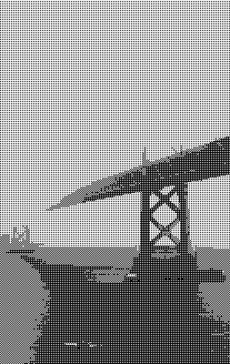
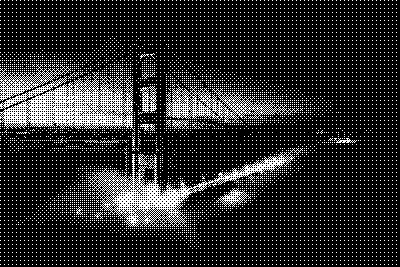
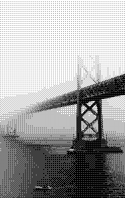
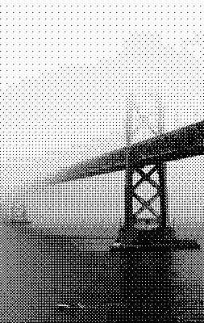
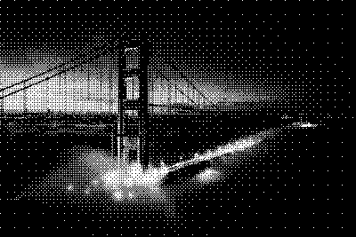
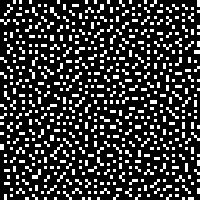

March 23, 2021
A while ago, I read Surma’s excellent article on dithering. Immediately, it sparked my interest in the game Return of the Obra Dinn, which I’ve since enjoyed immensely. I also thought it would be fun to try to implement some of the dithering algorithms he’s describing in Futhark, but I never really got around to it. Until now!
I’ll mainly be focusing on the blue noise filter, as that seemed like the most interesting one, but I’ll also be implementing the Bayer filter and perhaps a few others. I’ll skip most of the details about how dithering works and what the purpose is, and instead direct you to the article linked above. The purpose of this post is to illustrate how we can implement the algorithms described using Futhark.
By the way, this blog post was written using futhark literate so you can inspect the entire source code at your leisure.
With all that out of the way, let’s dive in.
We’ll be using the same images as in Surma’s blog post:

Loading images into futhark literate returns pixels in ARGB format in the form of [][]u32. We’re only interested in greyscale images, so let’s write a few functions to convert an ARGB image into greyscale. We’ll use f32 values between 0 and 1 to represent greyscale, with 0 being black and 1 being white. We also immediately perform the gamma-correction, so we can meaningfully work with the greyscale images from now on.
let unpack_rgb (pixel: u32): (u8, u8, u8) =
(u8.u32 pixel,
u8.u32 (pixel >> 8),
u8.u32 (pixel >> 16))
let brightness (pixel: u32): f32 =
let (r, g, b) = unpack_rgb pixel
-- We could use just one of the channels, but this should give us the same
-- result.
in (f32.u8 r + f32.u8 g + f32.u8 b) / (255.0 * 3)
let to_linear (b: f32): f32 =
if b <= 0.04045 then
b / 12.92
else
((b + 0.055) / 1.055) ** 2.4
let greyscale [n][m] (img: [n][m]u32): [n][m]f32 =
map (map (to_linear <-< brightness)) imgNow we can try to apply the simple quantization method of simply checking if each pixel is below or above 0.5 in order to determine if it should be black or white:
let quantize [n][m] (img: [n][m]f32): [n][m]bool =
map (map (\b -> if b > 0.5 then true else false)) img> :img quantize (greyscale ($loadimg "dark-original.png"))
> :img quantize (greyscale ($loadimg "light-original.png"))Note that I use booleans to represent pure black-and-white pixels: true is white and false is black.
As stated in the original article, this method is pretty unsatisfying. We can barely see what’s depicted.
Let’s try with random noise instead.
import "lib/github.com/diku-dk/cpprandom/random"
module d = uniform_real_distribution f32 minstd_rand
let quantize_random [n][m] (seed: i32) (img: [n][m]f32): [n][m]bool =
-- Create a rng per pixel
let rngs = minstd_rand.rng_from_seed [seed]
|> minstd_rand.split_rng n
|> map (minstd_rand.split_rng m)
-- For each pixel apply the randomness factor and quantize
in map2 (map2 (\rng pixel ->
let (_, x) = d.rand (0, 1) rng
in if pixel + (x - 0.5) > 0.5
then true
else false))
rngs img> :img quantize_random 123i32 (greyscale ($loadimg "dark-original.png"))
> :img quantize_random 123i32 (greyscale ($loadimg "light-original.png"))
Next we come to the dithering algorithsm. The first one is the Bayer dithering, which uses Bayer matrices.
concat_m takes four equal-sized matrices and arranges them in a square matrix.
let concat_m [n] 't (xss1: [n][n]t) (xss2: [n][n]t) (xss3: [n][n]t) (xss4: [n][n]t): [][]t =
let n2 = n * 2
in concat (transpose (concat_to n2 (transpose xss1) (transpose xss2)))
(transpose (concat_to n2 (transpose xss3) (transpose xss4)))bayer computes the Bayer matrix of rank n.
let bayer (n: i64): [][]i32 =
let helper i = map (map (\x -> 4 * x + i))
let bayer = [[0, 2], [3, 1]]
in if n == 0 then bayer
else
loop bayer for _ in 1 ... n do
concat_m (helper 0 bayer)
(helper 2 bayer)
(helper 3 bayer)
(helper 1 bayer)Note that we should perhaps use the by bit-arithmetic method instead, or at least figure out which one is faster: https://en.wikipedia.org/wiki/Ordered_dithering
We’ll also need to be able to normalize Bayer filters (and later bluenoise filters). For that we’ll introduce normalize:
let normalize [n][m] (xss: [n][m]i32): [n][m]f32 =
let maximum = i32.maximum (map i32.maximum xss)
in map (map (\x -> f32.i32 x / f32.i32 maximum)) xssFinally, dither is the dithering function to apply a dither mask to an image.
let dither [n1][m1][n2][m2] (img: [n1][m1]f32) (mask: [n2][m2]f32): [n1][m1]f32 =
let helper i j pixel =
if pixel > mask[i % n2, j % m2]
then 1.0
else 0.0
in map2 (\i -> map2 (helper i) (iota m1))
(iota n1) imgLet’s see some results
let bayer0 = normalize (bayer 0)
let bayer1 = normalize (bayer 1)
let bayer2 = normalize (bayer 2)
let bayer3 = normalize (bayer 3)> :img dither (greyscale ($loadimg "dark-original.png")) bayer0> :img dither (greyscale ($loadimg "light-original.png")) bayer0
> :img dither (greyscale ($loadimg "dark-original.png")) bayer1
> :img dither (greyscale ($loadimg "light-original.png")) bayer1
> :img dither (greyscale ($loadimg "dark-original.png")) bayer2> :img dither (greyscale ($loadimg "light-original.png")) bayer2
> :img dither (greyscale ($loadimg "dark-original.png")) bayer3
> :img dither (greyscale ($loadimg "light-original.png")) bayer3I think that looks pretty good!
Let’s move on to blue noise filters, which is another way of generating masks for dithering. It’s based on the void-and-cluster method as originally described by Robert Ulichney.
I’ve only implemented the naive version, which computes everyting in the spatial domain. I’ll see if I can’t get around to implementing the frequency-domain method that Surma described.
First, we need to be able to generate the input pattern, which is just a randomly generated binary pattern:
Now, for computing the gaussian, we need to choose a value for σ:
let sigma: f32 = 1.5For the filter, we use the gaussian function suggested by Ulichney:
let gaussian (x: i64) (y: i64): f32 =
f32.e ** (- (f32.i64 x ** 2 + f32.i64 y ** 2) / (2 * sigma ** 2))The dither_value function is a straight-forward implementation of DA from the paper:
let dither_value [M] (bp: [M][M]bool) (x: i64) (y: i64): f32 =
map (\p ->
let p = p - M/2
in map (\q ->
let q = q - M / 2
let p' = (M + x - p) % M
let q' = (M + y - q) % M
in f32.bool bp[p', q'] * gaussian p q)
(iota M)
)
(iota M)
|> map f32.sum
|> f32.sumHaving implemented dither_value, we can now implement the tightest_cluster and largest_void functions. Really, they are quite similar, and we could certainly abstract them out into one function, but keeping them separate makes it more clear what they do.
let tightest_cluster [n] (inp: [n][n]bool): (i64, i64) =
-- First compute, for each pixel in `inp`, the dither_value. Return also the
-- indices for each pixel and its boolean value.
map2 (\i row -> map2 (\j v -> ((i, j), v, dither_value inp i j))
(indices row)
row)
(indices inp) inp
-- Flatten the matrix so we are working on a single-dimensional array.
|> flatten
-- Find the highest-valued pixel, considering only pixels that are `true` in
-- the original input.
|> reduce_comm (\(idx, x, v) (idx', x', v') ->
if v > v' || !x'
then (idx, x, v)
else (idx', x', v'))
((-1, -1), false, f32.lowest)
|> (.0)
let largest_void [n] (inp: [n][n]bool): (i64, i64) =
map2 (\i row -> map2 (\j v -> ((i, j), v, dither_value inp i j))
(indices row)
row)
(indices inp) inp
|> flatten
|> reduce_comm (\(idx, x, v) (idx', x', v') ->
if v < v' || x'
then (idx, x, v)
else (idx', x', v'))
((-1, -1), true, f32.highest)
|> (.0)With these building blocks in place, let’s implement initial_binary_pattern. ip is the input pattern, and the result is the initial binary pattern.
let initial_binary_pattern [n] (ip: *[n][n]bool): *[n][n]bool =
let (_, _, res) =
-- Initialize the two indices with invalid but different values
loop ((i, j), (i', j'), ip) = ((-2, -2), (-1, -1), ip)
-- While the the two indices are different
while (i, j) != (i', j') do
-- Compute the location of the tightest cluster
let (i, j) = tightest_cluster ip
-- Set that location to false
let ip[i, j] = false
-- Compute the location of the largest void
let (i', j') = largest_void ip
-- Set that location to true
let ip[i', j'] = true
-- Repeat
in ((i, j), (i', j'), ip)
in resIn order to compute the initial binary pattern, we need a random input pattern, which will be generated by the rand_binary_pattern function:
module dist = uniform_int_distribution i64 minstd_rand
let rand_binary_pattern (seed: i32) (n: i64) (m: i64): [n][m]bool =
let rng = minstd_rand.rng_from_seed [seed]
-- Generate an n*m matrix with just `false` values
let xss = replicate n (replicate m false)
-- Generate a minority number of indices and set them to `true`.
let rngs = minstd_rand.split_rng (n * m / 4) rng
let (_, idxs, vals) =
map (\rng ->
let (rng, y) = dist.rand (0, n) rng
let (rng, x) = dist.rand (0, m) rng
in (rng, (y, x), true))
rngs
|> unzip3
in scatter_2d xss idxs valsFinally, in order to visualize the smallish patterns, let’s write some functions to scale them up to arbitrary pixels sizes:
let scale [n][m] 't (n2: i64) (m2: i64) (img: [n][m]t): *[n2][m2]t =
let y_scale = f32.i64 n2 / f32.i64 n
let x_scale = f32.i64 m2 / f32.i64 m
in tabulate_2d n2 m2 (\i j -> img[i64.f32 <| f32.i64 i / y_scale,
i64.f32 <| f32.i64 j / x_scale])
let scale_f32: (i64 -> i64 -> [][]f32 -> *[][]f32) = scale
let scale_bool: (i64 -> i64 -> [][]bool -> *[][]bool) = scaleWith all that in hand, let’s take a look at what a generated initial binary pattern could look like:
let ibp = initial_binary_pattern (rand_binary_pattern 123 64 64)> :img scale_bool 200i64 200i64 ibp
That looks pretty good, I think! So now, let’s go about turning it into a blue noise pattern. The bluenoise function is a pretty straight-forward implementation of the algorithm as described in Ulichneys original paper:
let bluenoise [n] (ibp: [n][n]bool) : [n][n]i32 =
-- Load the binary pattern with the initial binary pattern
let bp = copy ibp
-- ones is the number of `true` values in the binary pattern
let ones =
flatten ibp
|> map i32.bool
|> i32.sum
let rank = ones - 1
-- `dit` is the result dither array we'll input values into.
let dit = replicate n (replicate n 0i32)
-- Phase 1
let (dit, _, _) =
loop (dit, bp, rank)
while rank >= 0 do
let (i, j) = tightest_cluster bp
let bp[i, j] = false
let dit[i, j] = rank
in (dit, bp, rank - 1)
let bp = copy ibp
let rank = ones
-- Phase 2
let (dit, bp, rank) =
loop (dit, bp, rank)
while rank < i32.i64 (n * n / 2) do
let (i, j) = largest_void bp
let bp[i, j] = true
let dit[i, j] = rank
in (dit, bp, rank + 1)
-- Invert the binary pattern, such that `false` are now the minority pixels
let bp = map (map (!)) bp
-- Phase 3
let (dit, _, _) =
loop (dit, bp, rank)
while rank < i32.i64 (n * n) do
let (i, j) = tightest_cluster bp
let bp[i, j] = false
let dit[i, j] = rank
in (dit, bp, rank + 1)
in ditLet’s take a look:
let bluenoise_mask = normalize (bluenoise ibp)> :img scale_f32 200i64 200i64 bluenoise_maskLooks pretty random to me. Let’s try to apply it to our images:
> :img dither (greyscale ($loadimg "dark-original.png")) bluenoise_mask> :img dither (greyscale ($loadimg "light-original.png")) bluenoise_maskCool! I think I’ll leave this here for now. I have other work to do…
So long, and thanks for following along!